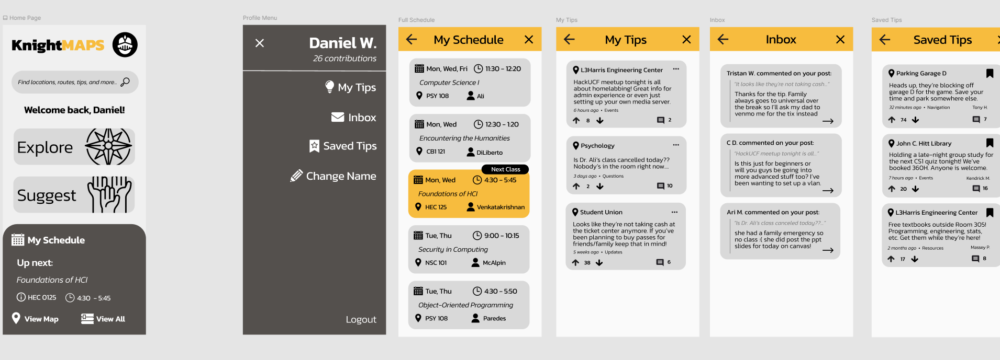
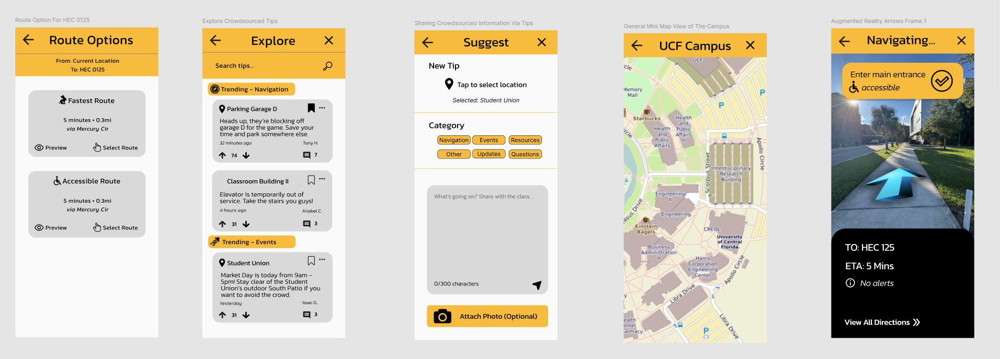

Case Study - Human Computer Interaction
A campus navigation & planning prototype for UCF students - designed for intuition, validated through real usability research.


Knight MAPS is a conceptual campus navigation and planning application designed to help University of Central Florida students quickly locate buildings, view class schedules, and navigate campus efficiently.
The project focused on creating an intuitive, low-friction user experience for everyday campus use and time-sensitive class transitions - reducing the cognitive overhead of getting around a sprawling 1,415-acre campus.
Features include interactive campus maps, building search, step-by-step navigation, and a crowdsourced tips system where students can share location-specific advice with one another.
100% task completion rate. All participants successfully completed all 15 tasks, indicating strong learnability and overall usability.
Navigation tasks were fast and clear. Users moved through building search and step-by-step directions with minimal hesitation, validating the core hierarchy.
Crowdsourced tips caused confusion. Users occasionally conflated saved tips, personal posts, and inbox-style views - the primary usability pain point.
Explore the live Figma prototype or view the full portfolio.